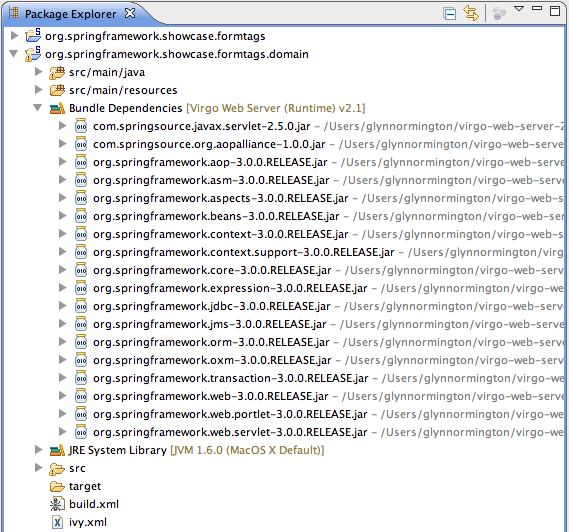
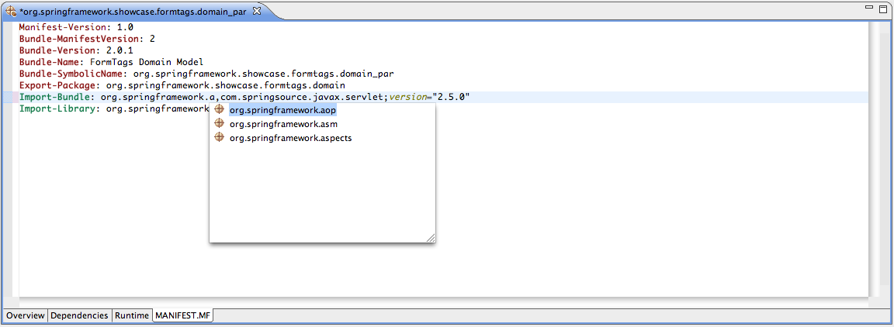

The Tools provide functionality that makes developing OSGi bundles, especially the editing of MANIFEST.MF files, easier.
While working with OSGi bundles, one of the most interesting and challenging aspects is defining
the package, bundle, and library imports in the manifest and then keeping this in sync
with your compile classpath either in Ant and Maven or Eclipse. In most cases you would typically
be required to manually set up the Eclipse classpath. Ultimately, the Eclipse compile
classpath is still different from the bundle runtime classpath, as normally an entire
JAR file is being made available on the Eclipse classpath but not necessarily at runtime
due to the explicit visibility rules defined in Import-Package headers.
The Tools address this problem by providing an Eclipse classpath container that
uses an Virgo Tomcat Server-specific dependency resolution mechanism. This classpath
container makes resolved dependencies available on the project’s classpath but allows
only access to those package that are imported explicitly (e.g., via Import-Package)
or implicitly by using Import-Library or Import-Bundle.
To use the automatic dependency resolution, an OSGi bundle or PAR project needs to be targeted to a configured Virgo Tomcat Server instance. This can be done from the project’s preferences by selecting the runtime on the "Targeted Runtimes" preference page.
Note
In most scenarios it is sufficient to target the PAR project to a runtime. The nested bundles will then automatically inherit this setting.

After targeting the project or PAR you will see a "Bundle Dependencies" classpath container in your Java project. It is now safe to remove any manually configured classpath entries.
The classpath container will automatically attach Java source code to the classpath entries by looking for source JARs next to the binary JARs in the Virgo Tomcat Server’s repository. You can also manually override the source code attachment by using the properties dialog on a single JAR entry. This manual attachment will always override the convention-based attachment.
The Tools provide a Bundle Manifest Editor that assists the developer to create and
edit MANIFEST.MF files. The editor understands the Virgo Tomcat Server specific headers
like Import-Library and Import-Bundle and provides content
assist features while editing source code. Furthermore a Eclipse Form-based UI is also
available.
To open the Bundle Manifest Editor right click a MANIFEST.MF file and select "Bundle Manifest Editor" from the "Open With" menu.
Note
Please note that the Virgo Tomcat Server specific manifest headers appear in green color to distinguish them from those headers defined in the OSGi specification. This also makes navigating much easier.

The content assist proposals in the source tab as well as in the UI-based tabs are resolved from the bundle and library repository of an installed and configured Virgo Tomcat Server. Therefore it is important to target the project or PAR to a specific VTS instance to indicate to the tooling which bundle repository to use.
Note
If a OSGi bundle project is not targeted to a VTS instance, either directory or indirectly via a PAR project’s targetting, the manifest editor will not be able to provide content assist for importing packages, bundles, and libraries.

The Dependencies tab of the Bundle Manifest Editor enables the user to easily download and install bundles and libraries from the SpringSource Enterprise Bundle Repository by using the "Download..." buttons next to the "Import Bundle" and "Import Library" sections.